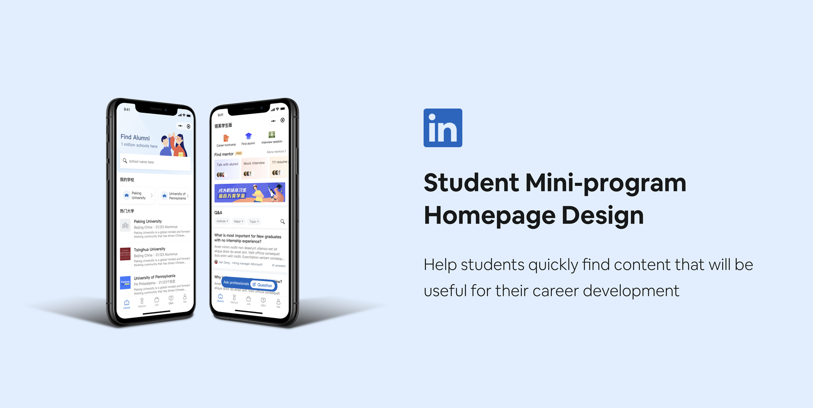
Design by accretion
The student mini-program — launched in 2020, struggled to adapt to the hyper-growth of the business and student users. As time flies by, we received enough feedback on our MVP version of the student mini-program. We reframed our mission as helping students plan their careers and connect them with professionals. The main challenge I face is that most student users were unable to identify the value of the student app and have no idea of how to use it to achieve success in their career. To convey the key values of the LinkedIn student app, I designed the homepage of the mini-program.
Background
What's a mini-program?
Mini Programs are 'mini-applications' built within the WeChat platform that don't need to be downloaded or installed. WeChat allows 3rd-party companies to develop Mini Programs providing advanced features to users that can run within WeChat.
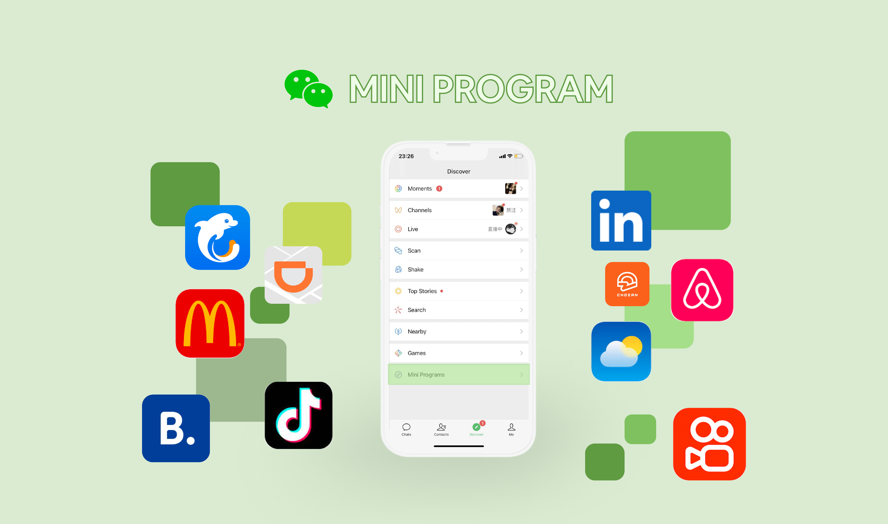
Why do we want to onboard LinkedIn on WeChat mini-program?
WeChat is now a very important channel for brand, product, marketing, and operation teams in China. WeChat platform is easier for users to share LinkedIn profiles and valuable contents.
- WeChat has 1.09 billion daily active users.
- Provide users with one more convenient channel to access LinkedIn.
- It's easy for users to share LinkedIn profiles and valuable contents.
WeChat users check messages from time to time. They can receive messages from LinkedIn if they linked WeChat and LinkedIn account. So, there is a higher rate for them to come back to LinkedIn whenever receiving messages and notifications. WeChat also provides a chance for sharing LinkedIn's marketing campaigns or valuable contents. Existing users can bring lots of new sign ups through viral sharing.
Notification to promote retention
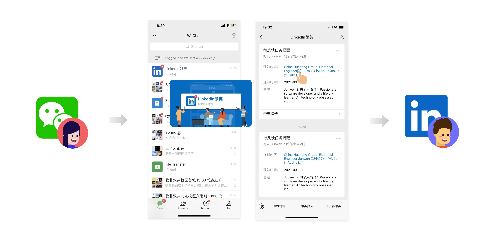
Viral sharing
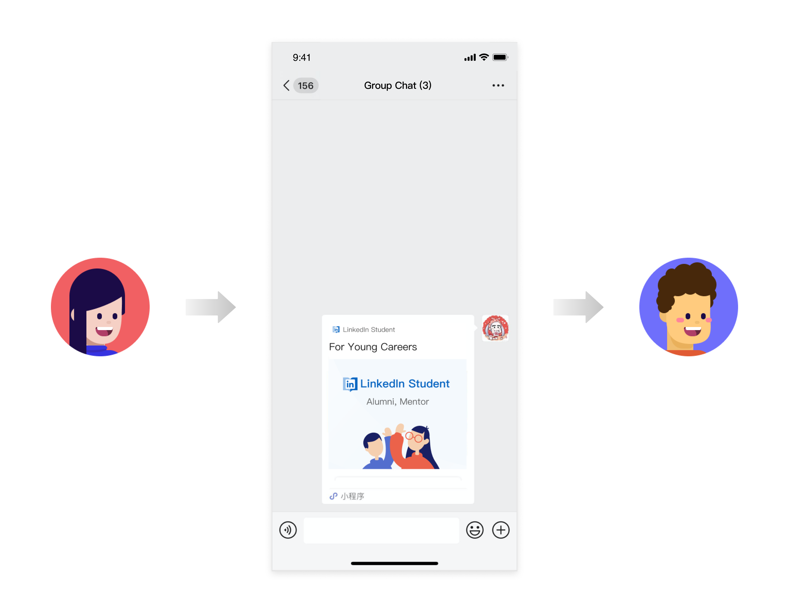
Students as Target Users
The student cohort is our main strategy this year in China. From our former research, students are a special group of users who are eager to learn and who are at the beginning of shaping their career paths. If they get into the habit of using LinkedIn as a tool for their career choice, they will be potential future professionals on LinkedIn.
Opportunities for Mini-program
- Students are in the early stages of their careers and actively seek networking and knowledge.
- Students are potential future professionals on LinkedIn.
Context
We customized a number of features based on the needs of the student cohort. A lot of students don't know how to approach getting a job. We help students understand the importance of reaching out to alumni/mentors to get more information around a role or company and potentially a job. Also, we surface career / job related Q&As for them to read to help guide them through the job seeking process.
LinkedIn Student Mini-program · MVP version
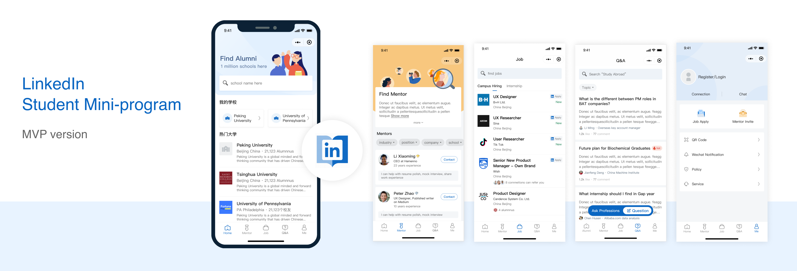
Why do we decide to design a new homepage for LinkedIn mini-program?
- Within the product vision, we have reframed our mission to help students plan their careers and connect them with professionals. The student mini-program MVP — launched in 2020, struggled to adapt to the new mission.
- As time flies by, we've received enough user feedback on our student mini-program MVP. If the user wants to know the whole mini-program, they have to browse all the tabs, which requires extra effort to get the value of LinkedIn.
I have no idea what the student mini-program is about from the first glance.
Student interview · 01
I thought LinkedIn mini-program is nearly the same as LinkedIn app.
Student interview · 02
I just stopped searching for alumni and didn't explore more features.
Student interview · 03
- From quantitative data, the click through rate on the homepage is far more than others, while the drop-off rate is also far more than others. Student users usually stop at finding alumni (the homepage)
Providing key values on the homepage is necessary to keep students retained and serve them better.
The Challenge
Challenge 01
Vague direction
At the beginning of the product scope change, we did not yet have a specific plan on how to help students succeed in planning their career. Under the myriad of uncertainties, it is difficult to create an extensible homepage design. Uncertainty mainly comes from the following aspects.
- 📱 From the product side, we can provide __?__ product value to our users to realize our product success.
- 👩🎓 From the end user side, users need __?__ to realize their career success.
Challenge 02
Conflict between business and user experience
The student mini-program — launched in 2020 — struggled to adapt to the hyper-growth of the business needs. Each business pillar required a special space on the homepage to maximize business value. However, commercial campaigns are not the user's purpose. Users needed efficient, worthwhile content and services inside the mini-program.
Challenge 03
Feedback management
The biggest challenge I faced throughout the project was managing feedback across every part of the business and cross-functional stakeholders. The team spent a disproportional amount of time debating design directions — when there wasn't data that could easily be gathered to drive a decision.
I observed this pattern early on and invested time in creating documentation to alleviate the data crutch and better articulate and distribute design rationale. Completing this work ahead of schedule was time-consuming, but saved a lot of back-and-forth as the project progressed.
How I got there
Who are our target users?
- Students who are looking for a job or preparing for work
- New to LinkedIn
- Not only top schools are included, but also average schools.
Understand the pain points of the target students
Given the myriad of uncertainties, I first referred to UER reports about students. The biggest pain points are career choices, lack of job-related information and network building. They are also psychologically stressed when they consult a mentor.
Align with stakeholders
Considering the pain points of users, I discussed them with different stakeholders about our opportunities. This helped me think about the goals of the project from user experience, product, and marketing perspectives — and translate them into my design goals.
User Experience
Make it easier to discover, understand and use what users want
Product
Convey clear business priorities and enable scalability
Marketing
Provide entry points for campaigns
So I defined my design goal correspondingly.
Design Goal
Help students find what matters — fast.
- Help users quickly locate what's useful for their career planning
- Structured the information effectively and convey our values
- Provide entry points for campaigns and facilitate quick action
Move forward with designs
One of my biggest challenges was finding the right direction while collaborating with a wider team. I needed to get buy-in from end users, product partners, marketing and engineer teams. Design principles and the information prioritization framework helped increase visibility into my decision-making process and galvanize the team to share in the vision.
Design principles — guide our team towards making appropriate decisions
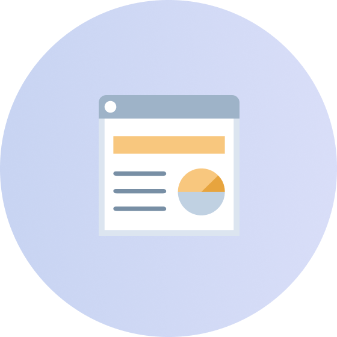
Clear
Make sure the structure is clear and reasonable
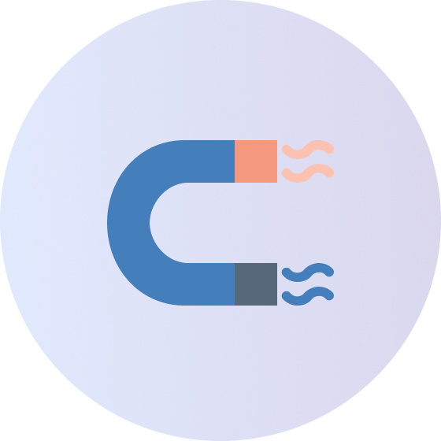
Relevant
Be relevant to users' intent and help get what they want
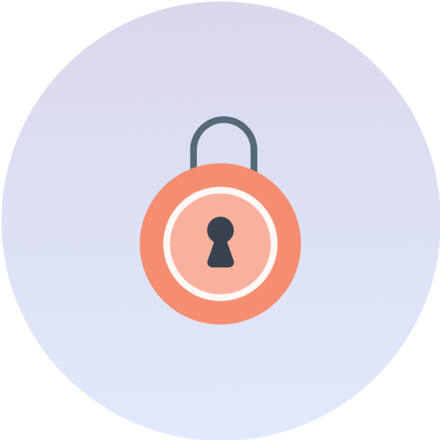
Trustworthy
Close the gap between students and professionals
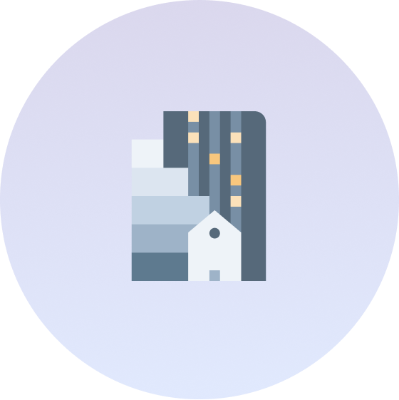
Scalable
Scalable connection between the future and the present
Information prioritization — What could be the best for product and end users?
My earliest design challenge was to propose what information could be displayed on our homepage for members and guests. To get started, I went through the current features and prioritized top ones according to value, feature maturity, popularity, and update frequency.
Information Prioritization

Mentor/mentee is a very unique and differentiated value for LinkedIn and have received good feedback in previous user interviews. We debated between alumni and the Q&A feature, which are both useful for students. Q&A content is consumable, it has more liquidity, while finding alumni does not bring constant value. Based on research findings, students are eager to learn about work-related information, so I hypothesized Q&A content will be more popular and bring constant values to students. Finding jobs is a rigid demand, but less frequent. The live feature is immature. So they are not selected on the homepage this time.
Design
Section 01 · Frame the direction
The framework
We refined the structure to balance the most important value to surface and the secondary actions students take. Priorities were set — I could focus on exploring possibilities at a more detailed level.
Mentor feature to communicate the valuable differentiation of our product
Q&A or other consumable content
Mentor/mentee
Q&A
The wireframe surfaces the hierarchy at a glance — banner up top, mentorship as core value proposition, Q&A for the consumable long-tail. Grey wireframe fidelity kept the conversation about priority, not visual polish.
Section 02 · Explore
Envision a better future
I held a brainstorming session with 5 cross-functional partners to paint a big picture of the Mini Program and see what the possibilities are in the near future.
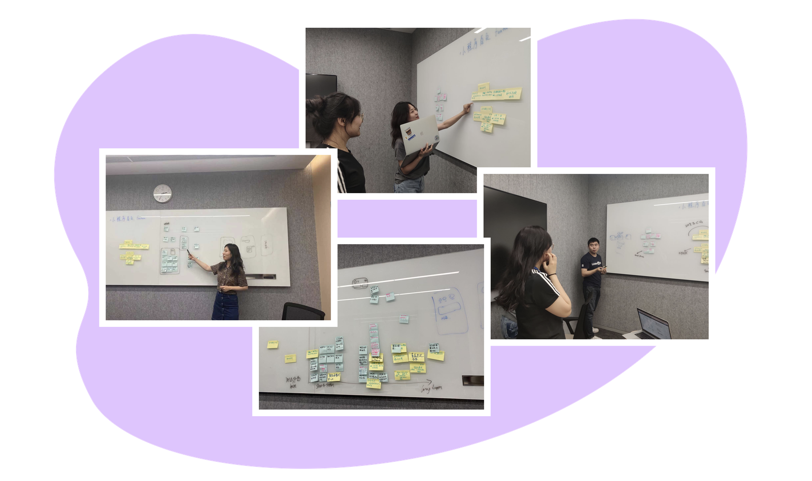
Brainstorming ( ~ 60 min )
5 cross functional partners
- Engineers
- Product Managers
- Designers
Considerations
- How to solve students' pain points?
- What could be achieved in the near future?
- How to deal with students unmet needs?
We created a prioritization matrix to screen out ideas that would have a large impact and less effort as short-term alternatives. Although many of these concepts were not feasible at the time of launch, they were still important to help get the team excited about the future of the student mini-program.
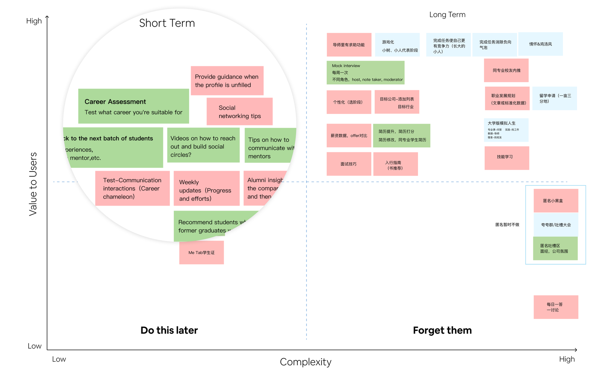
Section 03 · Visualize possibilities
Visionary design alternatives
To have a visionary view of the mini-program and its homepage, I explored design solutions based on brainstorming ideas. Then I picked out the following ideas after discussing with my PM partners.
Mentor/mentee
Q&A
Mentor/mentee
Q&A
Pros: Information is provided to students at different stages respectively. The content is recommended to users according to their stages.
Cons: Accuracy of recommendation might impact the effect.
Mentors you've matched with
I can help with resume, interviews, and referrals
I can help with resume editing
Q&A
Pros: Students can find a tutor based on their experience and what they provide.
Cons: Hard to recommend mentors when users are guests. Effects highly depend on recommendation accuracy.
Find mentor
Resume editing
Polish everything
Mock interviews
Be well prepared
Job refer
Your job fit
Q&A
Pros: Conveys the value of mentor/mentee more directly.
Cons: Feature-oriented but not user-oriented. Needed to be verified.
Meet alumni
Get referral from your best resource
Find mentor
Your career mentor is always there
Q&A
Pros: Referral by alumni as a start point makes it easy to build connections.
Cons: Weakens focus by giving too many choices. Mentor entry is weakened.
Section 04 · Resolve tensions
Solve the conflicts
Each business pillar required a special space on the homepage to maximize business value. The homepage carries the burden of communicating differentiated values and maximizing engagement. Although business is chasing commercial interests, it must be balanced with user value, and the so-called balance is a win-win situation, otherwise the campaigns and ads are failures. So, how to integrate business needs such as marketing campaigns or advertising into our product?
Scalable modules
Highlight the hottest events or live streams, considering the next-step operational needs
One banner instead of carousel banners
Eye-catching & less space & high traffic
LinkedIn Student
Mentor/mentee
Q&A
Multiple operation positions
✓ Selected
Carousel banners
The number should be within 5 · Eye-catching · Perceived as ads
LinkedIn Student
Mentor/mentee
Q&A
One banner
Multiple promotion slots are better than carousel banner slots to ensure the communication rate, so that activities can be fully displayed to users and made users perceive.
Multiple promotion slots are conducive to the comparison of operational effects, thereby providing data support for future operational activities. Analyze and compare which operation slot has the best effect, so as to indirectly know which operation slot is more easily accepted by the user.
Section 05 · Validate
Test our assumptions
We made some assumptions about what would bring the most value to users and tested how they perceived and used the homepage. I created a testing plan to guide the whole research.
Testing plan
What we expect from user research
A
User needs & feature preferences
B
New homepage design
Research Goals
A Understand user needs
- The user's current or potential needs
- Affinity for existing and new features
- Preferences and tendencies for future directions
B Test the new homepage design
- Positioning and perception of the product
- Usability
Within the limited time and resources, I recruited students from different universities on "Visiting Days" to save time and effort. With the help of research and design colleagues, we successfully completed the research.
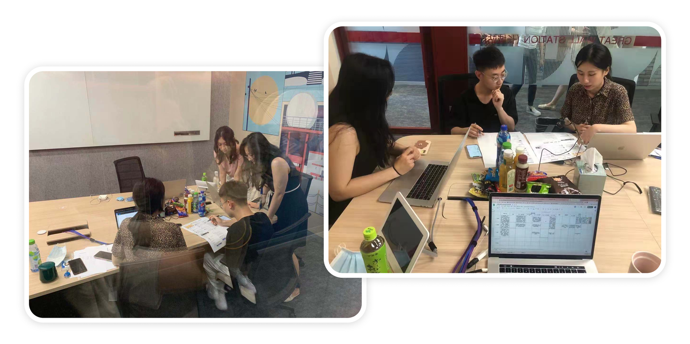
Methodology
- 5 participants, 1:1 interviews
- 45 minutes per session. Interview & observation.
- All features & New homepage
Test with different ideas
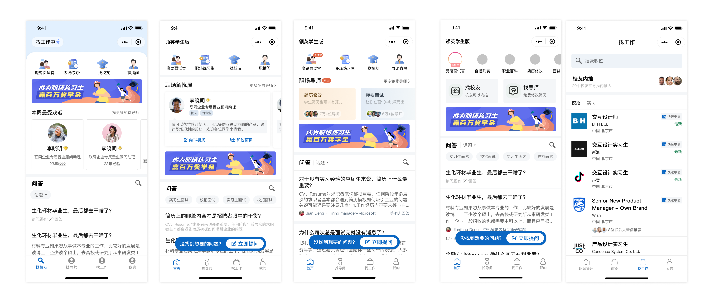
Hear from users
User 01
Trust issues in finding mentors
- Skeptical about mentor's motivation
- Alumni and peers feel more approachable
- Worry the person behind the screen isn't real
User 02
Relevant to me
- Accurate recommendations by major, job, industry
- Prefer alumni and people with similar backgrounds
User 03
Eager to learn
- Learn something useful for job seeking
- Curious what a real workplace looks like
- Want to know what a job interview looks like
User 04
Habits in using mini-program
- Prefer interactive, casual, relaxed experiences
- Care about efficiency
Section 06 · Refine
The refinement
Although the concept of "stage customization" won praise, we did not launch this feature due to the impact of guest user identity information on the accuracy of recommendations and the limitations of engineer resources. Students say talking to mentors is stressful, but alumni bring each other closer and increase trust. Therefore, I hope that "talking to alumni" can serve as a starting point for communication.
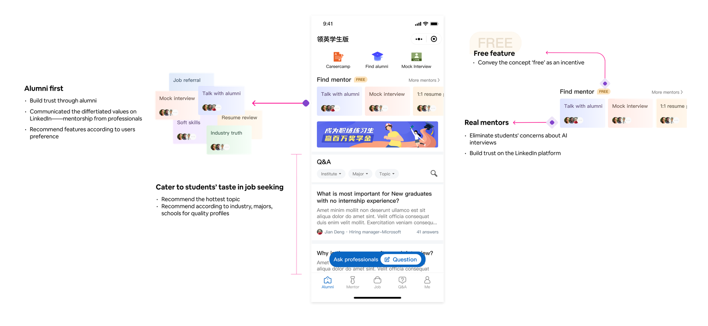
Section 07 · Launch
Bring it to life
The gallery below shows the detailed design for the homepage and its interaction with other features.
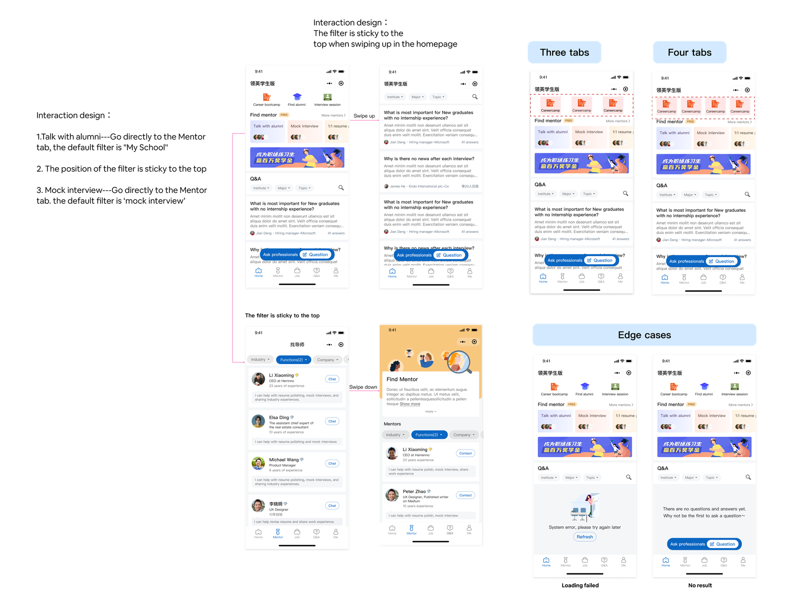
Section 08 · Measure
Results
I worked with a data scientist to run the first AB test on LinkedIn Mini-program. We chose Total CTR and Drop-off rate as the metrics to prove both statistical (p-value < 0.05, Z-score > 1.96) and practical significance.
Core metrics
- Total CTR increased +24.8% on Homepage
- Drop-off rate decreased −12.8% on Homepage
- Session, retention, quality profile and session depth stayed neutral (as expected)
- Increased user interactions on the surfaces we prioritized
- Less drop out from mini-program
- Homepage redesign did not hurt Macro-metrics
Findings
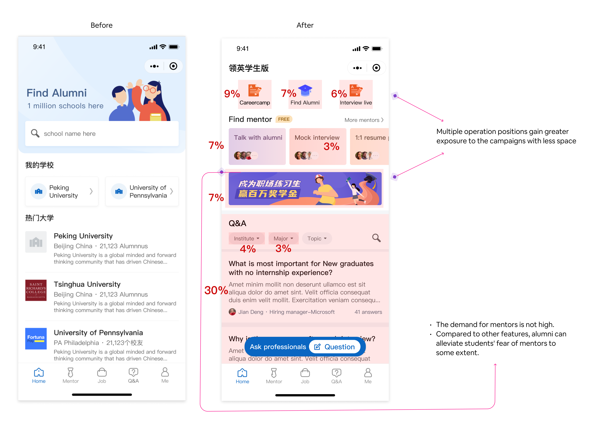
Finding 01
CTR of Q&A is highest; mentor lowest
- Verified our assumptions
Finding 02
Mentor/mentee is a low-frequency need
- High cost for time and effort
- Culture difference / social anxiety
Finding 03
Alumni value should not be underestimated A/B test
- Guest users interact less with the new homepage — 'Find Alumni' satisfies their curiosity (hypothesis)
- In the Chinese market, students have great trust in alumni; most career info comes from senior students at their university (UER)
Reflections
01
On this project
Lessons specific to the Homepage redesign
Focus on core values
Homepage design is never an easy task — many perspectives to consider. But the most important thing is that the homepage should focus on the core values that your app offers, because that's why users come.
Match content to student need
Q&A contains special tips for students' career development that can be easily consumed. Mentor, while low-frequency, is popular and useful. Those become the reason why students come.
Qualitative + quantitative together
Qualitative data helps us understand why students view alumni as their most important resource in job seeking. Quantitative data tells us how important it is.
02
On the craft
Practices I'm taking with me to the next project
Interpret data yourself
Designers need to interpret data on their own and objectively justify their design decisions whenever possible.
Envision, then illustrate
Designers are engaged by empathy — envision a better future and paint the picture for others. Designers serve an essential role of getting people excited to blaze that new trail together.
Take the team on the journey
Take the team on the journey instead of teleporting them directly to the solution, which could save a lot of back-and-forth.
Thanks!
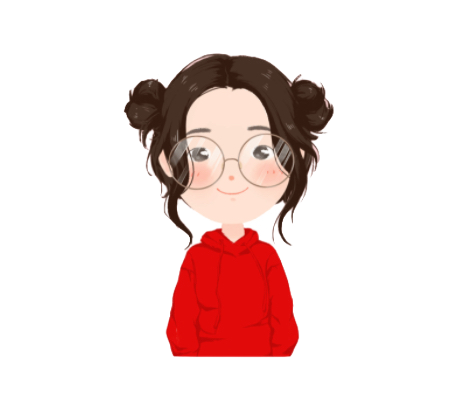